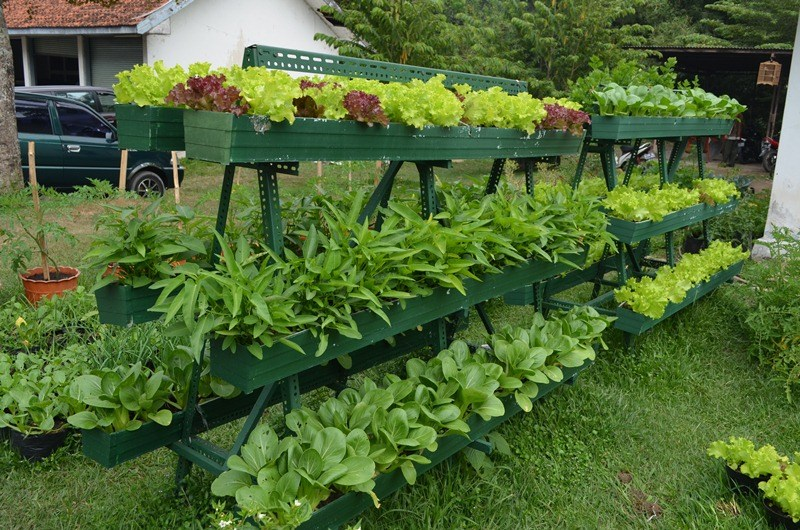
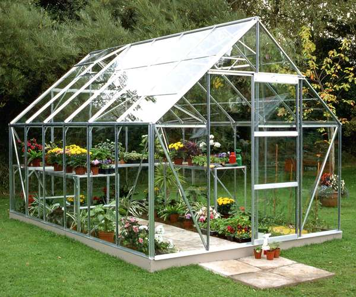
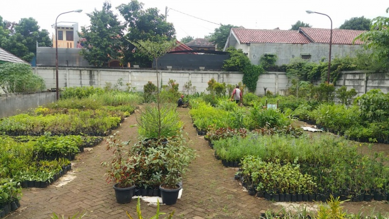
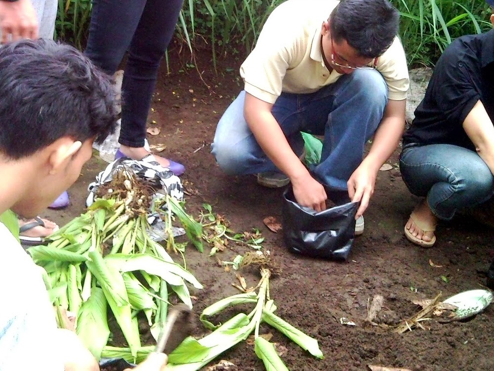
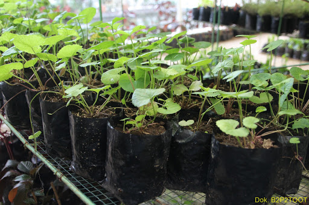
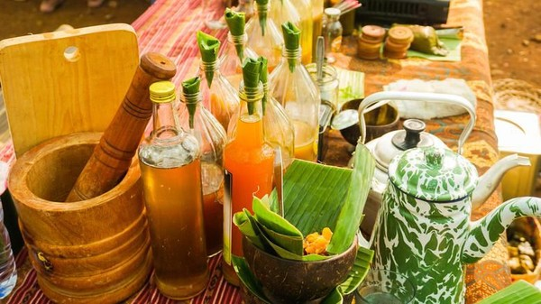

Apa itu TOGA? |
Tanaman obat keluarga (disingkat TOGA) adalah tanaman hasil budidaya rumahan yang berkhasiat sebagai obat. Taman obat keluarga pada hakekatnya adalah sebidang tanah, baik di halaman rumah, kebun ataupun ladang yang digunakan untuk membudidayakan tanaman yang berkhasiat sebagai obat dalam rangka memenuhi keperluan keluarga akan obat-obatan. Kebun tanaman obat atau bahan obat dan selanjutnya dapat disalurkan kepada masyarakat, khususnya obat yang berasal dari tumbuh-tumbuhan Budidaya tanaman obat untuk keluarga (TOGA) dapat memacu usaha kecil dan menengah di bidang obat-obatan herbal sekalipun dilakukan secara individual. Setiap keluarga dapat membudidayakan tanaman obat secara mandiri dan memanfaatkannya, sehingga akan terwujud prinsip kemandirian dalam pengobatan keluarga. |
Berikut adalah jenis-jenis tanaman TOGA yang dibudidayakan di desa kami. |
Jenis-Jenis Toga |
Wisata Alam dan Edukasi Desa Hogwarts adalah obyek wisata yang dibuat sendiri oleh masyaraka desa Hogwarts dengan tujuan untuk mengedukasi warga lain mengenai tanman TOGA.
Wisata Alam |
Kalian dapat mengunjungi berbagai wisata di Desa Hogwarts, diantaranya sebagai berikut: |
|  Taman Toga |
 Greenhouse milik Desa Hogwarts |
 Kebun TOGA |
Wisata Edukasi |
Desa Hogwarts juga menyediakan wisata edukasi terutama bagi pelajar dan juga anak-anak sebagai media pembelajaran untuk mengenal TOGA lebih mendalam. |
Bibit dan Pengolahan TOGA |
Desa Hogwarts membudidayakan bibit secara mandiri. Bibit diperoleh dari pembenihan atau pun dengan teknik rhizoma yang nantinya digunakan untuk perkembangbiakan selanjutnya. |
|
|


|

|
| No. | Nama Paket | Konten | Biaya | Informasi tambahan |
|---|---|---|---|---|
| 1. | Paket Gryffindor | Kelas pengenalan TOGA dan pembuatan jamu. | Rp20.000/orang dewasa, Rp18.000/remaja, Rp15.000/anak-anak. | Potongan Rp2.000/orang jika anggota kelompok > 5 orang. |
| 2. | Paket Slytherin | Kelas pengenalan TOGA, penanaman TOGA, dan pembuatan jamu | Rp25.000/orang dewasa, Rp23.000/remaja, Rp20.000/anak-anak. | Potongan Rp3.000/orang jika anggota kelompok > 5 orang. |
| 3. | Paket Hufflepuf | Kelas pengenalan TOGA, penanaman TOGA, pembuatan jamu, dan akses gratis ke taman bermain. | Rp35.000/orang dewasa, Rp33.000/remaja, Rp30.000/anak-anak. | Potongan Rp4.000/orang jika anggota kelompok > 5 orang. |
| 4. | Kelas Ravenclaw | Kelas pengenalan TOGA, penanaman TOGA, pembuatan jamu, akses gratis ke taman bermain, serta bingkisan gratis khas Desa Hogwarts | Rp50.000/orang dewasa, Rp48.000/remaja, Rp45.000/anak-anak. | Potongan Rp5.000/orang jika anggota kelompok > 5 orang. |